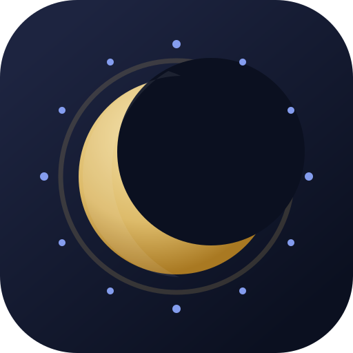

Concept A Recommended
Premium, calm, and launch-safe. The crescent stays readable at small sizes, with small celestial accents that avoid crossing or cluttering the moon form.
These are isolated concept assets only. Nothing here is wired into the app yet. The goal is to choose the visual direction before generating final launcher, PWA, notification, and social-share files.
Premium, calm, and launch-safe. The crescent stays readable at small sizes, with small celestial accents that avoid crossing or cluttering the moon form.

More celestial and calendar-like. The phase dots add meaning, but this is more detailed and may lose clarity in notification and favicon contexts.
Most explicit about calendar utility. It is clear, but the calendar base makes it feel more functional and less distinctive than the crescent-first route.